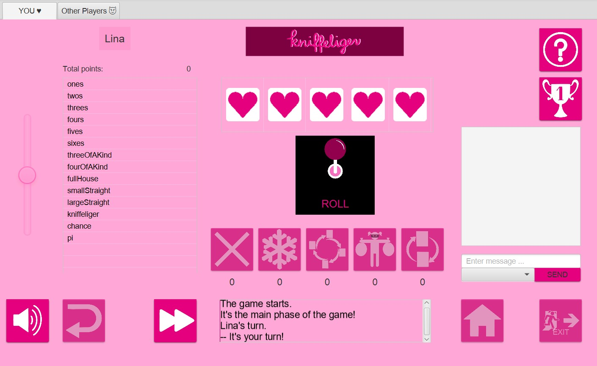

Kniffeliger
Kniffeliger ist ein innovatives Spiel basierend auf dem Klassiker Yatzy, Kniffel, Yahtzee, Kismet, ... Während der Klassiker den Fokus auf die Würfelmechanik alleine setzt, indem jede Spieler*in die Möglichkeit hat, dreimal zu würfeln und versuchen bestimmte Kombinationen zu erwürfeln, beschreitet Kniffeliger neue Wege.Die innovative neue Action Dice Mechanic erlaubt eine Interaktion zwischen den Spieler*innen, die der Klassiker nicht aufweist. So ist es in Kniffeliger nun möglich, Einträge von anderen Spieler*innen zu stehlen, einzufrieren oder gar zu streichen. Diese Action Dices werden immer verliehen, wenn die Summe der Würfel am Ende der Runde durch eine bestimmte Zahl teilbar sind (öhhh Mathe, aber keine Panik! Darum kümmert sich das Spiel selbst.).
In diesem Sinne viel Spaß!
Kniffeliger - Wie Kniffel nur besser.

Trailer
Entwickler:
- Riccardo Grieco
- Anisja Mayer
- Lina Mehrle
- Dominique Ostermayer
Steuerung:
Zum Spielen wird nur eine Maus benötigt.Action Dices:
Steal: Stehle einen Eintrag von einer anderen Spieler*in.Freeze: Friere Eintrag einer Spieler*in ein.
Cross Out: Streiche einen Eintrag einer Spieler*in.
Shift: Rotiere die Blätter der Spieler*innen.
Swap: Tausche das eigene Blatt mit dem einer anderen Spieler*in.